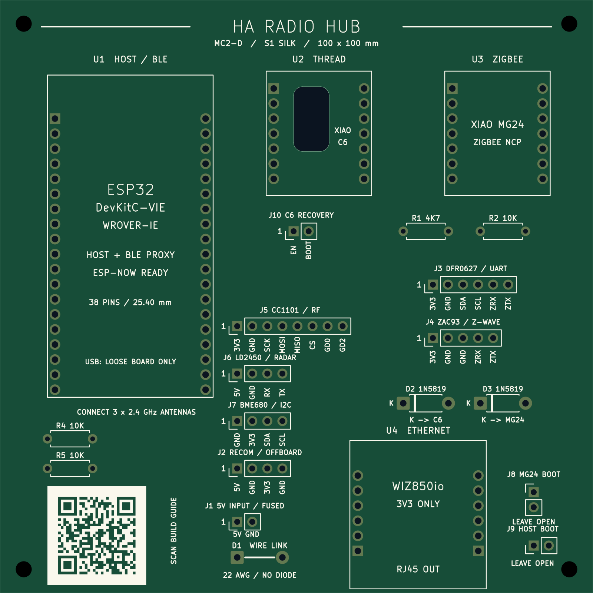
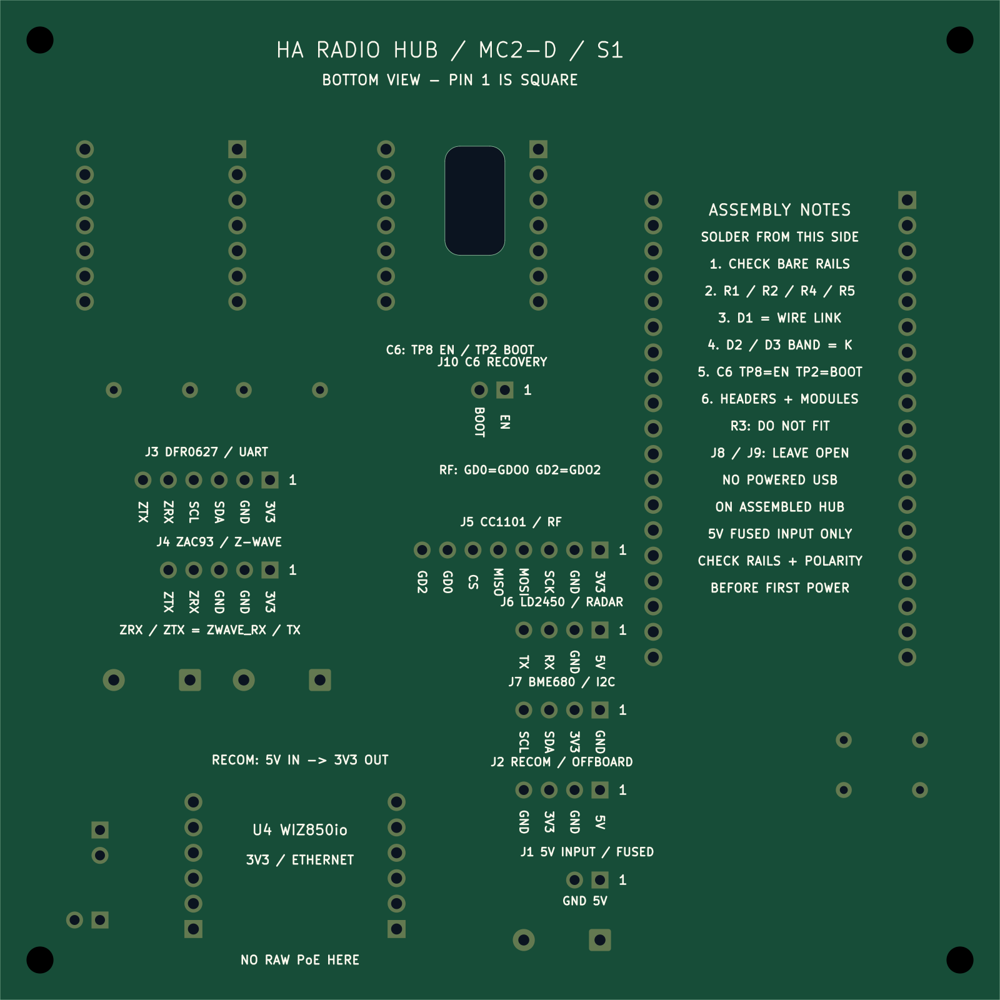

MC2-D S1: an assembly guide printed on the PCB
S1 changes the white silkscreen on both sides of MC2-D. The circuit, module positions, copper, solder mask, holes, C6 access opening and 100 × 100 mm outline are unchanged. The purchased modules and FH1 enclosure remain the same. Already manufactured MC2-D boards remain usable; this artwork is for the next batch.

The front identifies all four module positions and their roles: the ESP32-DevKitC-VIE host/BLE/ESP-NOW, XIAO ESP32C6 Thread radio, XIAO MG24 Zigbee radio and WIZ850io Ethernet module. Complete body outlines help placement; role labels outside the outlines remain visible after fitting modules.
Harness labels identify the external RECOM supply, DFR0627 UART expander, ZAC93 Z-Wave board, CC1101 RF board, LD2450 radar and BME680 sensor. These peripherals retain their separate enclosure mounts; their names on the carrier identify connectors, not new module footprints. The C6 EN/BOOT lead header is also marked. Each harness has a pin-1 indicator and individual supply/signal labels.
The same layout explicitly marks resistor values, diode cathodes and destinations, D1 WIRE LINK / NO DIODE, and the normally open service connections.

The bottom repeats the connector legends in the correct orientation for soldering and carries an assembly checklist, C6 TP8/TP2 reminder, R3 omission and NO POWERED USB ON ASSEMBLED HUB warning. The drawings are native CAD exports with illustrative substrate/pad colours, not photographs of a manufactured S1 board.
Reading the compact labels
- 3V3 is the peripheral 3.3 V rail; it is not a controller's local 3.3 V output.
- ZRX/ZTX abbreviate the existing
ZWAVE_RX/ZWAVE_TXnet names. - GD0/GD2 mean CC1101 GDO0/GDO2. MOSI, MISO, SCK and CS retain their normal names.
- RX/TX at J6 mean the existing
RADAR_RX/RADAR_TXnets. Follow the connector lookup for the opposite end of each cable; do not infer direction from which side you view. - K means the diode cathode: put the banded end at pad 1.
- Pin 1 is the square pad. The silkscreen does not change the pin numbering.
QR and public website
The front QR points to the public build guide. It is a normal QR with error correction M, 0.45 mm modules and an uninterrupted four-module light quiet zone on every side. Its outer size is 16.65 × 16.65 mm. White ink prints the light cells; the dark cells are unprinted green solder mask. No copper QR, exposed-metal QR or full-colour printing is involved.
The URL stays independent of release names. The current guide retains the MC2-D/S1 identity and links to source and historical packages. The generated front image was decoded independently at 1600 px and 800 px board width; the receipt records the URL and exact image/source hashes. A scan test on an actual S1 board remains part of first-batch acceptance. Keep supplier production markings away from the QR and its quiet zone.
Ordering and cost
Use MC2-D-S1-prototype-gerbers.zip with ordinary white silkscreen on both sides, green mask, two copper layers, 1.6 mm FR-4, 1 oz copper and lead-free HASL. Do not select UV/full-colour printing, special artwork processing, extra layers or a new board outline.
Expected additional charge for this artwork: $0. PCBWay lists white and black silkscreen as having no extra charge in its standard capabilities, checked 11 November 2026. Its minimum legend stroke is 0.15 mm and minimum character height is 0.8 mm; S1 uses at least those dimensions. This is an incremental artwork estimate, not a supplier quote or a promise that shipping, tax, coupons or the total repeat-order price stay unchanged. No new order has been placed. Keep the normal production identifier rather than paying for its removal.
The native comparison guards every non-silkscreen object. The fabrication comparison compares the new Gerbers/drills with the original package: only the two silkscreen members may differ after creation timestamps are removed. The original package is preserved separately and is not silently relabelled S1.
Reproduce or edit the artwork
Edit silkscreen.py, not the exported PNG. It is applied during the normal native CAD regeneration. The QR matrix is checked in so native generation needs no network or QR library. It was generated with python-qrcode 8.2; do not edit matrix cells by hand.
Follow the native regeneration instructions,
then run silkscreen_check.py and regenerate the mechanical evidence and
fabrication package. reproduce_check.py compares the regenerated artwork as
well as copper topology. Native ERC, DRC, unconnected items and schematic parity
must all be zero; artwork gets no clearance waivers.
For the previews, install hardware/external-antenna/cad/artwork-requirements.txt
in a separate environment with Cairo available, then run:
python hardware/external-antenna/cad/render_silkscreen.py --cli /path/to/kicad-cli
Use the native KiCad 10.0.6 exporter. Do not mirror or modify Gerbers manually; the back preview is mirrored only to show the physical bottom view.